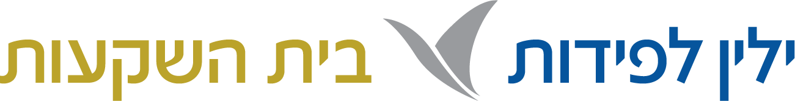
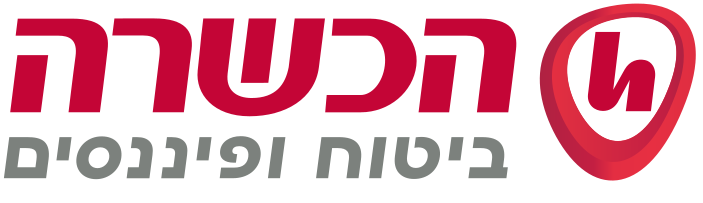

מבצע סוף שנהדמי ניהול מופחתים למצטרפים חדשים
פוליסת החיסכון של הכשרה
שישה מנהלי השקעות בפוליסה אחת, ומעבר ביניהם בלי לשלם מס.

רועי רומנו, מתכנן פיננסי סוכן פנסיוני מורשה, רישיון 00117164. המידע נכון לנובמבר 2026.
במה היא שונה
ברוב פוליסות החיסכון, חברת הביטוח היא גם מי שמנהלת את ההשקעות. מי שרוצה שגוף השקעות אחר ינהל את הכסף שלו צריך למשוך אותו מהפוליסה ולהפקיד בחברה אחרת, והמשיכה יוצרת אירוע מס.
בפוליסת החיסכון של הכשרה, שנקראת BEST INVEST, זה עובד אחרת. בתוך אותה פוליסה אפשר לבחור בין מסלולי השקעה שמנהלים שישה גופי השקעות: ילין לפידות, אלטשולר שחם, מור, מיטב, אנליסט והכשרה. אפשר לחלק את הכסף ביניהם, ולעבור ממנהל אחד לאחר בלי למשוך את הכסף ובלי לשלם מס באותו רגע.
הפוליסה היא של הכשרה חברה לביטוח, בפיקוח רשות שוק ההון, ביטוח וחיסכון. את הכללים הבסיסיים של פוליסת חיסכון, כמו מס, נזילות ומוטבים, אפשר לקרוא במדריך פוליסת חיסכון. כאן אני מתמקד במה שמייחד את הפוליסה של הכשרה.
הפוליסה של הכשרה במבט אחד
| מנהלי השקעות | שישה: ילין לפידות, אלטשולר שחם, מור, מיטב, אנליסט והכשרה |
|---|---|
| מסלולים | מגוון מסלולי השקעה, ואפשר לשלב כמה מהם באותה פוליסה |
| מעבר בין מסלולים ובין מנהלים | בתוך הפוליסה, בלי אירוע מס ובלי עלות |
| דמי ניהול | מהצבירה בלבד, לפי סכום ההפקדה. אין דמי ניהול מההפקדות |
| תקרת הפקדה | אין |
| נזילות | משיכה מלאה או חלקית בכל עת, בלי קנס יציאה |
| מס על הרווח | רק במשיכה, עד 25% מהרווח הריאלי |
נכון לנובמבר 2026, לפי אתר הכשרה. המקורות מפורטים בסוף העמוד.
שישה מנהלי השקעות בפוליסה אחת
בפוליסה יש מגוון מסלולי השקעה, ביניהם מסלול כללי, מסלול מניות, מסלולי אג"ח, מסלול כספי (שקלי) ומסלולים שעוקבים אחרי מדדים, כמו S&P 500. כל מסלול מנוהל על ידי אחד מגופי ההשקעות. אפשר לבחור מסלול אחד, או לחלק את הכסף בין כמה מסלולים וכמה מנהלים.
המשמעות המעשית: לא צריך להחליט פעם אחת ולתמיד מי ינהל את הכסף. אם גוף השקעות מסוים לא עומד בציפיות שלכם, או שהמטרה שלכם השתנתה, אפשר להעביר את הכסף למנהל אחר או למסלול אחר, באפליקציה או באזור האישי באתר הכשרה.
שילוב של כמה מנהלים נועד לפזר ולגוון את ההשקעות, וכך נהנים מהאסטרטגיה ומהחשיבה השונה של כל מנהל השקעות. עם זאת, חשוב לשים לב ששני מסלולי מניות של שני מנהלים שונים עדיין חשופים לרמת סיכון דומה.
פוליסה אחת שישה מנהלי השקעות


מעבר בין מנהלים בלי אירוע מס
זה היתרון המרכזי של הפוליסה. בפוליסת חיסכון רגילה, מעבר בין מסלולים באותה חברה אינו אירוע מס, אבל מעבר לגוף השקעות אחר מחייב משיכה, ולכן תשלום מס על הרווח. בהכשרה המעבר בין גופי ההשקעות נעשה בתוך הפוליסה, ולכן המס נדחה עד שתמשכו את הכסף. לפי הכשרה, אפשר לעבור בין מסלולים ובין מנהלים בכל עת, בלי הגבלה ובלי עלות.
הכסף שהיה הולך למס בכל החלפה ממשיך להיות מושקע. לעומת זאת, מי שמחזיק קרנות נאמנות או ניירות ערך בחשבון רגיל משלם מס על הרווח בכל מכירה.
ביולי 2026 פרסם צוות במשרד האוצר המלצות להשוות את המיסוי של פוליסות חיסכון, קופות גמל להשקעה וקרנות נאמנות. אלה המלצות בלבד, והן ייכנסו לתוקף רק אם יעוגנו בחקיקה. הפירוט נמצא במדריך פוליסת חיסכון, ואם הכללים ישתנו, העמוד יעודכן.
דמי ניהול לפי סכום ההפקדה
בפוליסה של הכשרה דמי הניהול נגבים רק מהצבירה, כלומר מהכסף שנצבר בפוליסה, ולא מההפקדות. שיעור דמי הניהול נקבע לפי סכום ההפקדה ונקבע מראש, ואינו תלוי ברמת הסיכון של המסלול או במנהל שבחרתם. בתיק השקעות מנוהל, למשל, דמי הניהול משתנים לעיתים לפי רמת הסיכון של התיק.
דמי הניהול בהצטרפות דרכי
| הפקדה חודשית שוטפת | 1.1% בשנה מהצבירה |
|---|---|
| 5,000 עד 99,999 ₪ | 1.1% בשנה מהצבירה |
| 100,000 עד 249,999 ₪ | 1% בשנה מהצבירה |
| 250,000 עד 499,999 ₪ | 0.95% בשנה מהצבירה |
| 500,000 עד 999,999 ₪ | 0.9% בשנה מהצבירה |
| מיליון ₪ ומעלה | 0.85% בשנה מהצבירה |
לפי סכום ההפקדה. בהפקדות שוטפות בלבד, 1.1%. דמי הניהול הסופיים מופיעים בטופס ההצטרפות ובתנאי הפוליסה.
עד סוף השנה יש מבצע עם דמי ניהול נמוכים יותר. לטבלת המבצע ←
הטבה בשילוב מנהלי ההשקעות של הכשרה. מי שמשלב את מסלולי ההשקעה שמנהלת הכשרה ב־30% לפחות מהתמהיל נהנה מהנחה של 0.03% מדמי הניהול המוצהרים.
הטבות נוספות. יש הטבות ללקוחות בגילאי 18 עד 30 וללקוחות חברי הייטקזון. אשמח לבדוק איתכם אם אתם זכאים.
מעבר לדמי הניהול יכולות להיות גם הוצאות ישירות של ניהול ההשקעות, שמנוכות מהתשואה.
אין עמלות בנקאיות, ואין עמלה על הפקדה או על משיכה.
נזילות, הלוואה ומוטבים
- נזילות. אפשר למשוך את כל הכסף או חלק ממנו בכל עת, בלי התחייבות לתקופה ובלי קנס יציאה. על הרווח משלמים מס במשיכה.
- הלוואה. אפשר לקבל הלוואה כנגד הכסף שנצבר, בלי למשוך את החיסכון. ההלוואה בכפוף לאישור הכשרה ולתנאים שלה, כולל ריבית.
- מוטבים. אפשר לרשום מוטבים ולעדכן אותם באזור האישי. כמו בקופת גמל, ובשונה מכסף בחשבון בנק, הכסף מגיע ישירות למוטבים ואינו חלק מהעיזבון הרגיל.
- מעקב. את הפוליסה, התשואות והפעולות אפשר לראות באפליקציה של הכשרה ובאזור האישי באתר, וגם בדוחות התקופתיים.
- הפקדות. אין תקרת הפקדה. אפשר להפקיד סכום חד־פעמי, הפקדה חודשית או את שתיהן, ולהוסיף כסף גם בהמשך.
אנונה: תזרים חודשי מהפוליסה
במקום למשוך סכום אחד, אפשר לבקש מהכשרה להעביר לחשבון הבנק סכום קבוע בכל חודש. זו אנונה. היתרה בפוליסה ממשיכה להיות מושקעת במסלולים ובמנהלים שבחרתם, והתשלומים נמשכים לתקופה שבחרתם או עד שהכסף בפוליסה נגמר.
היתרון הוא בניהול התזרים: מי שצריך הכנסה קבועה, למשל בפרישה או בתקופה בלי משכורת, מקבל "משכורת" חודשית מהחיסכון, בלי לזכור למשוך כל פעם מחדש ובלי להוציא את כל הכסף מההשקעה בבת אחת. מס משלמים רק על חלק הרווח שבכל תשלום.
אנונה אינה קצבה לכל החיים. התשלום ממשיך כל עוד יש כסף בפוליסה, ובתקופה של ירידות בשווקים הכסף עלול להיגמר מוקדם מהמתוכנן. לכן כדאי לקבוע את הסכום החודשי בזהירות ולבדוק אותו מדי פעם. על אנונה ועל הטבות המס בגיל מבוגר אפשר לקרוא עוד במדריך פוליסת חיסכון.
להשוות תשואות לפני שבוחרים
להכשרה יש מחשבון תשואות שבו אפשר לסמן מסלולים, גופי השקעות וטווח זמן, ולראות את תשואות העבר שלהם זה לצד זה. התשואות שם לפני דמי ניהול, ותשואת עבר אינה מבטיחה תשואה בעתיד.
באתר שלי יש גם טבלה שמדרגת את פוליסות החיסכון לפי התשואה, כדי לראות איפה עומדים המסלולים של הכשרה מול שאר השוק.
לטבלת התשואות של פוליסות החיסכון למחשבון התשואות של הכשרה
מה חשוב לזכור
- בכל מסלול שיש בו מניות או אג"ח, השווי יכול לרדת, ולפעמים לתקופה ארוכה. נזילות היא לא הבטחה לשווי.
- מנהל שהוביל בשנה מסוימת לא בהכרח יוביל גם בשנה הבאה. כדאי להסתכל על טווחים ארוכים ולא להחליף מנהלים בעקבות חודש אחד.
- בפוליסת חיסכון אין היום פטור ממס במשיכה כקצבה מגיל 60, כמו בקופת גמל להשקעה. על ההבדלים אפשר לקרוא במדריך קופת גמל להשקעה.
- ההתאמה האישית תלויה במטרה, בטווח, בחסכונות האחרים שלכם ובסיכון שנוח לכם איתו.
איך מתקדמים
- אפיון צרכים. למה מיועד הכסף, מתי תצטרכו אותו, ואיזו רמת סיכון מתאימה לכם. זה השלב החשוב ביותר.
- בחירת התמהיל. אילו מסלולים, ואילו מנהלי השקעות.
- פתיחת הפוליסה. מילוי טופס ההצטרפות, דיגיטלית או יחד איתי.
- הפקדת הכסף.
- מעקב שוטף. עדכונים, דיווחים ושינויים כשצריך.
מבצע סוף שנה
דמי ניהול מופחתים למצטרפים חדשים
| סכום ההפקדה | רגיל | במבצע |
|---|---|---|
| הפקדה חודשית שוטפת | 1.1% | 1.1% |
| 5,000 עד 99,999 ₪ | 0.95% | |
| 100,000 עד 249,999 ₪ | 0.93% | |
| 250,000 עד 499,999 ₪ | 0.90% | |
| 500,000 עד 649,999 ₪ | 0.87% | |
| 650,000 עד 799,999 ₪ | 0.85% | |
| 800,000 עד 999,999 ₪ | 0.83% | |
| 1,000,000 עד 1,999,999 ₪ | 0.83% | |
| 2,000,000 עד 2,999,999 ₪ | 0.80% | |
| 3,000,000 ₪ ומעלה | 0.78% |
דמי ניהול שנתיים מהצבירה.
המבצע למצטרפים חדשים עד סוף 2026. מדרגת דמי הניהול נקבעת במועד ההצטרפות, לפי סכום ההפקדה ו/או הצבירה הקיימת שלכם בהכשרה. דמי הניהול הסופיים מופיעים בטופס ההצטרפות.
הצטרפות דיגיטלית דרכי
אפשר להצטרף לפוליסה של הכשרה דיגיטלית דרכי: את המסלולים ואת הסכום בוחרים בטופס של הכשרה, ושם גם מופיעים תנאי הפוליסה ודמי הניהול. מעדיפים לעבור על זה קודם יחד? מוזמנים ליצור איתי קשר.
היתרון בהצטרפות דרכי: אתם לא לבד. אני מלווה אתכם מהאפיון ופתיחת הפוליסה, דרך דיווחים ועדכונים, ועד שינויים במסלולים, בדמי הניהול או במיסוי, ויש תמיד למי לפנות.
ההצטרפות מתבצעת דרכי כסוכן ביטוח, ואני מקבל על כך עמלה מחברת הביטוח. המחיר לא משתנה בגלל ההצטרפות דרכי.
כסוכן פנסיוני אני עשוי לקבל עמלות מחברות ביטוח ומגופים מוסדיים, הפרטים בגילוי הנאות. המידע בעמוד כללי, נכון לנובמבר 2026, ואינו ייעוץ השקעות, ייעוץ פנסיוני או ייעוץ מס אישי, ואינו המלצה על מוצר, מסלול או מנהל השקעות. התנאים המחייבים הם אלה שבפוליסה. תשואת עבר אינה מבטיחה תשואה בעתיד. מקורות: הכשרה, פוליסת חיסכון BEST INVEST · הכשרה, שאלות ותשובות על BEST INVEST · משרד האוצר, הדו"ח המסכם של הצוות, יולי 2026.
מכירים מישהו שהכסף שלו יושב בעו"ש?
לשתף בוואטסאפ